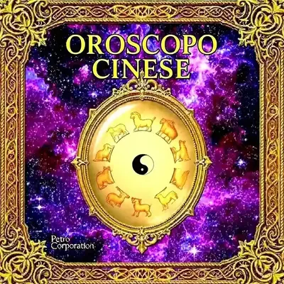

Nella tradizione, si lanciano tre monete sei volte.
Testa vale 3 (Yang), Croce vale 2 (Yin). La somma determina ogni linea.
Linee generate: 0 / 6
L'I Ching: Il Libro dei Mutamenti tra Storia, Filosofia e Divinazione

Dalle Origini Leggendarie ai Giorni Nostri
L'I Ching (易經, Yì Jīng) — "Classico dei Mutamenti" — è uno dei testi più antichi e profondi dell'umanità. Le sue origini si perdono nella preistoria cinese: la leggenda attribuisce l'invenzione dei trigrammi all'imperatore Fu Xi (2800 a.C. circa), che avrebbe visto i simboli sul dorso di una tartaruga. Storicamente, l'I Ching raggiunge la sua forma attuale attraverso tre grandi autori: il Re Wen (che compose i 64 esagrammi durante la prigionia, 1099–1050 a.C.), il Duca di Zhou (che aggiunse le interpretazioni delle singole linee) e Confucio (551–479 a.C., che aggiunse i "Dieci Appendici" elevando il testo a classico filosofico).
Il genio matematico dell'I Ching colpì Gottfried Wilhelm Leibniz, che nel 1703 riconobbe nei 64 esagrammi la sua aritmetica binaria — il fondamento teorico del computer moderno. Carl Gustav Jung scrisse la prefazione all'edizione tedesca di Richard Wilhelm (1924), introducendo il concetto di sincronicità: i 64 esagrammi non prevedono il futuro in senso letterale, ma riflettono la struttura energetica del momento presente. Quando si lanciano le monete con intenzione autentica, la psiche inconscia co-crea il risultato in modo che esso rispecchi le forze realmente in gioco.
Come Funziona la Consultazione dell'I Ching
La struttura dell'I Ching si fonda su due principi: Yin (⚋, linea spezzata — ricettivo, femminile, terra, oscurità) e Yang (⚊, linea intera — creativo, maschile, cielo, luce). Combinando 3 linee si ottengono gli 8 trigrammi fondamentali (Ba Gua): Cielo ☰, Terra ☷, Tuono ☳, Vento ☴, Acqua ☵, Fuoco ☲, Monte ☶, Lago ☱. Sovrapponendo due trigrammi si ottengono i 64 esagrammi. Ogni esagramma porta un nome, un'immagine poetica, un giudizio e l'interpretazione di ogni linea.
La consultazione tradizionale usava 50 steli di achillea (Achillea millefolium) in un rituale che richiedeva circa 30 minuti. Il metodo delle tre monete, introdotto probabilmente durante la dinastia Tang (618–907 d.C.), semplificò il processo mantenendo la stessa distribuzione probabilistica. Su MYSTICA il lancio digitale replica esattamente le probabilità del metodo delle monete: Yang stabile (7) e Yin stabile (8) hanno probabilità del 37,5% ciascuno, Yang mutante (9) e Yin mutante (6) del 12,5% ciascuno.
L'I Ching non risponde mai con semplici sì o no. Ogni risposta è un contesto, una prospettiva, una saggezza che illumina la situazione da un angolo inaspettato. La tradizione insegna di non consultarlo per domande banali — il testo stesso, nella sezione introduttiva, avverte chi lo usa con leggerezza. L'I Ching chiede rispetto: formulare la domanda con chiarezza e onestà, fare silenzio interiore prima del lancio, leggere la risposta senza proiettare ciò che si vuole sentire.
🔍 Scopri le Altre CategorieFAQ
Concentrati sulla tua domanda, poi lancia tre monete per sei volte. Testa vale 3 (Yang), croce vale 2 (Yin). La somma di ogni lancio determina il tipo di linea: 6 = Yin mutante (⚋ →), 7 = Yang stabile (⚊), 8 = Yin stabile (⚋), 9 = Yang mutante (⚊ →). Le sei linee, costruite dal basso verso l'alto, formano il tuo esagramma.
Le linee con valore 6 o 9 sono "in movimento": una linea Yin mutante (6) si trasforma in Yang, una Yang mutante (9) si trasforma in Yin. Quando ci sono linee mutanti, si genera un secondo esagramma che mostra l'evoluzione futura della situazione. Le linee mutanti sono il punto più importante della lettura: indicano dove sta avvenendo la trasformazione.
Il testo originale è molto poetico e metaforico. Su MYSTICA le interpretazioni sono adattate al linguaggio contemporaneo mantenendo la profondità dell'originale. La chiave è leggere con mente aperta, senza cercare conferme a decisioni già prese. L'I Ching parla attraverso immagini e paradossi — lascia che il significato emerga gradualmente.
La tradizione suggerisce una sola consultazione per domanda specifica. Ripetere il lancio sulla stessa domanda è considerato irrispettoso verso il testo. Puoi fare più consultazioni al giorno se riguardano domande diverse e distinte. Molti praticanti fanno una consultazione mattutina come guida per la giornata.
Gli 8 trigrammi (Ba Gua) sono le unità fondamentali: combinazioni di 3 linee Yin/Yang associate a elementi naturali (Cielo, Terra, Fuoco, Acqua, Tuono, Vento, Monte, Lago). I 64 esagrammi nascono da tutte le possibili sovrapposizioni di due trigrammi. Il trigramma inferiore rappresenta la situazione interna/passata, quello superiore la situazione esterna/futura.
Wu Wei (無為) è il principio taoista del "non-agire" — non passività, ma azione spontanea in accordo con il flusso naturale delle cose. Molti esagrammi dell'I Ching insegnano quando agire e quando attendere, quando avanzare e quando ritirarsi. Il saggio non combatte il fiume — nuota nella direzione in cui già scorre.